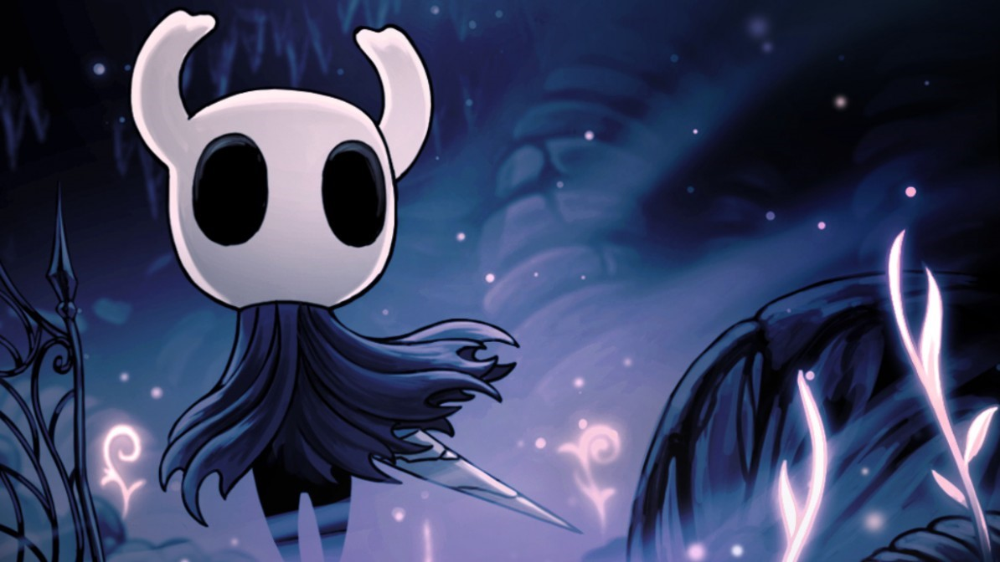

El Caballero
Es el personaje que el jugador controla a lo largo de la historia principal en Hollow Knight.
Al principio del juego, el Caballero está equipado solo con su Viejo Aguijón y la habilidad para curarse a sí mismo usando ALMA. A lo largo del juego, consigue nuevos poderes y Objetos que le permitirán avanzar dentro de Hallownest, el reino donde se desarrolla el juego, desbloqueando nuevas zonas y personajes.
SALUD Y ALMA
La salud se representa con máscaras, visibles en la esquina superior izquierda de la pantalla. El Caballero comienza el juego con 5 máscaras, pudiendo conseguir más obteniendo Fragmentos de máscara. Cuatro fragmentos de máscara crearán una nueva máscara de salud, siendo posible obtener hasta un máximo de 9 máscaras. El jugador perderá salud al recibir daño por enemigos o por obstáculos del entorno. Para restaurar la salud el jugador podrá sentarse en un Banco o usar la Concentración.
MEJORAS Y EQUIPAMIENTOS
| Aguijon | El arma principal del Caballero. Puede ser usado para atacar enemigos y
rebotar sobre obstáculos. Se mejora hablando con el Forjaguijones. También será posible usarlo para realizar las Artes del aguijón. |
|---|---|
| Habilidades | El arma principal del Caballero. Puede ser usado para atacar enemigos y
rebotar sobre obstáculos. Se mejora hablando con el Forjaguijones. También será posible usarlo para realizar las Artes del aguijón. |
| Hechizos | El arma principal del Caballero. Puede ser usado para atacar enemigos y
rebotar sobre obstáculos. Se mejora hablando con el Forjaguijones. También será posible usarlo para realizar las Artes del aguijón. |